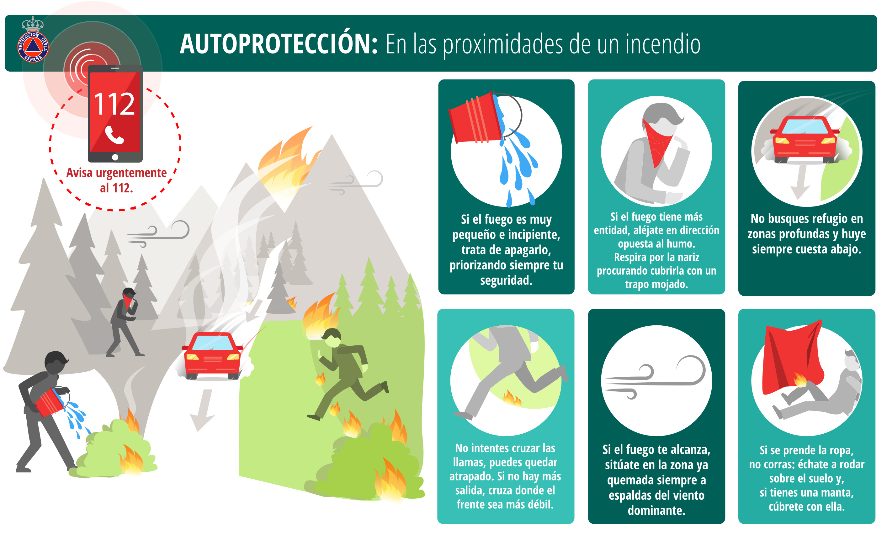

El Fuego: Un Elemento Fundamental
El fuego es uno de los descubrimientos más importantes en la historia de la humanidad. Los primeros humanos que aprendieron a controlar el fuego cambiaron su vida para siempre: ya no tenían que comer alimentos crudos, podrían calentarse en las noches frías y ahuyentar a los animales salvajes que los amenazaban. (Gowlett, J., 2016).
Pero el fuego no solo fue útil en el pasado. Hoy en día, lo seguimos usando en casi todo: para cocinar, para generar electricidad e incluso para fabricar objetos de metal, vidrio o cerámica. Sin embargo, también puede ser muy peligroso si no lo manejamos con cuidado. Por eso, es importante conocer cómo funciona, sus beneficios y los riesgos que tiene.
Objetivo General: Comprender cómo se produce el fuego, su historia, y su importancia para la humanidad, tanto en el pasado como en la actualidad.
Objetivos Específicos:
✔ Comprender cómo se produce el fuego, y su reacción química.
✔ Aprender quiénes fueron los primeros en usarlo y cómo impactó sus vidas.
✔ Entender todos los usos que le damos hoy en día, para comprender su importancia.
✔ Aprender a cómo protegernos de sus peligros, y hacer un uso responsable del mismo.
Naturaleza del Fuego: ¿Qué es y cómo funciona?
El fuego es como un baile entre tres elementos: combustible, oxígeno y calor. A esto los científicos lo llaman el "Triángulo del Fuego". (Scott, A., 2020)
- Combustible: Cualquier cosa que pueda arder, como la madera, el papel, el gas o incluso la gasolina.
- Oxígeno: El aire que respiramos contiene oxígeno, que "alimenta" al fuego.
- Calor: Una chispa, un fósforo o algo muy caliente puede encenderlo.
Si falta uno de estos tres, el fuego no puede existir. Por ejemplo:
- Si tapamos una vela con un vaso, se apaga porque se acaba el oxígeno.
- Si mojamos la madera, no se quema porque el agua enfría el calor.
Pero hay algo más: una vez que el fuego comienza, puede crecer rápidamente si hay mucho combustible y oxígeno. Esto se llama "reacción en cadena", y es la razón por la que los incendios se propagan tan rápido.
¿Por qué el fuego es diferente en cada lugar?
En un bosque, el fuego se extiende rápido si hay hojas secas y viento.
En una casa, los muebles y cortinas pueden hacer que un pequeño incendio se vuelva enorme en minutos.
Por eso, los bomberos y científicos estudian cómo se comporta el fuego para crear alarmas de humo, extintores y materiales que no se queman fácilmente.
Historia del Fuego: ¿Cuándo lo descubrió el ser humano?
El fuego ha estado en la Tierra desde hace millones de años, pero los primeros humanos no sabían cómo crearlo. Lo veían en los rayos que caían del cielo y prendían los árboles, en las erupciones de los volcanes o en los incendios que se producían en la naturaleza. Al principio, solo podían aprovecharlo si lo encontraban encendido.
Hace más de un millón de años, los primeros humanos llamados Homo erectus comenzaron a usar el fuego que encontraban para calentarse y cocinar (Huang, C., Li, J. & Gao, X., 2022). Se dieron cuenta de que el fuego era muy útil, así que intentaban mantenerlo encendido el mayor tiempo posible. Pero si se apagaba, tenían que esperar a que ocurriera otro incendio natural para volver a tener fuego.
Con el tiempo, aprendieron a proteger el fuego y a transportarlo. Por ejemplo, mantenían brasas vivas (pedazos de madera encendida que no se apagan fácilmente) y las llevaban de un lugar a otro para asegurarse de no quedarse sin fuego.
Pero el gran cambio ocurrió cuando descubrieron cómo hacer fuego por sí mismos. No necesitaban esperar a que la naturaleza lo creara; ahora podían generarlo cuando lo necesitaran. (Shimelmitz, R., Kuhn, S., Jelinek, A., Ronen, A., Clark, A., & Weinstein-Evron, M., 2014). 
 ¿Cómo lo lograron? Probando distintas técnicas, como:
- Frotar palos de madera: Descubrieron que si giraban un palo rápidamente sobre otro trozo de madera seca, el calor generado podía encender pequeñas brasas, que luego soplaban con cuidado hasta convertirlas en una llama.
- Golpear piedras: Al chocar ciertas piedras entre sí, como el pedernal, producían chispas. Si las chispas caían sobre algo seco, como hierba o musgo, podían hacer fuego.
Gracias a estos descubrimientos, el fuego dejó de ser solo un accidente de la naturaleza y se convirtió en una herramienta que los humanos podían controlar.
¿Cómo cambió la vida de las personas?
El fuego cambió la historia de la humanidad para siempre. Con él, la vida se volvió más segura, cómoda y avanzada. Aquí te contamos algunas formas en las que el fuego ayudó a nuestros antepasados:
- Cocinar los alimentos
Antes de que los humanos usaran el fuego, comían la carne y los vegetales crudos, lo que a veces era difícil de masticar y digerir. Pero cuando comenzaron a cocinar los alimentos:
- La carne se volvía más suave y fácil de masticar.
- Los vegetales cocidos eran más fáciles de digerir.
- Algunos alimentos que antes eran tóxicos o difíciles de comer se volvían seguros.
Esto hizo que los humanos se volvieran más fuertes y saludables, lo que les ayudó a sobrevivir y a evolucionar. (Barkai, R., Rosell, J., Blasco, R., & Gopher, A., 2017) 
2. Protección y calor
Por la noche, el fuego era un gran aliado.
- Daba luz cuando caía la oscuridad, permitiendo que las personas pudieran ver y sentirse seguras.
- Proporcionaba calor en los días fríos, evitando que las personas murieran por el clima helado.
- Alejaba a los animales peligrosos, como lobos y grandes felinos, que temían el fuego y se mantenían alejados de los humanos.
Gracias al fuego, los primeros humanos podían vivir en lugares más fríos, aventurarse en nuevas tierras y expandirse por el mundo. (Roebroeks, W., & Villa, P., 2011). 
3. Creación de herramientas más resistentes
El fuego también ayudó a los humanos a mejorar sus herramientas. (Brown, K., Marean, C., Herries, A., Jacobs, Z., Tribolo, C., Braun, D., Roberts, D., Meyer, M., & Bernatchez, J., 2009). 
- Endurecimiento de la madera: Descubrieron que al calentar puntas de lanzas de madera en el fuego, se volvían más resistentes y afiladas.
- Uso de arcilla: Aprendieron a cocer el barro para hacer vasijas más duraderas, lo que les permitió almacenar agua y comida por más tiempo.
- Descubrimiento de los metales: Miles de años después, los humanos aprendieron a usar el fuego para fundir metales, como el cobre y el hierro, con los que fabricaron armas, herramientas y armaduras.
El fuego permitió que los humanos fueran más eficientes y estuvieran mejor preparados para la vida diaria.
Historias de la mitología del fuego
Desde tiempos muy antiguos, las personas han contado historias increíbles sobre el fuego. En muchas culturas, el fuego no solo servía para cocinar o calentar, sino que también era algo mágico y sagrado. Aquí te contamos algunas de las leyendas más fascinantes sobre el fuego y sus guardianes.
Prometeo y el regalo del fuego (Mitología griega)
Los antiguos griegos creían que, al principio, los humanos vivían sin fuego y pasaban mucho frío. Pero un titán llamado Prometeo, que era muy sabio y quería ayudar a las personas, decidió hacer algo increíble: robar el fuego de los dioses y dárselo a los humanos. (Zimdahl, R. , 2011). 
Prometeo subió al Monte Olimpo, donde vivían los dioses, y con mucho cuidado, cogió una pequeña llama del carro del sol. Luego, la escondió dentro de una caña hueca y la llevó hasta la Tierra. Gracias a este regalo, los humanos pudieron calentarse, cocinar y fabricar herramientas.
Pero cuando Zeus, el dios más poderoso del Olimpo, se enteró de lo que había hecho Prometeo, se enfadó muchísimo. Como castigo, lo encadenó a una montaña donde un águila venía todos los días a picotearle el hígado. Aunque era un castigo muy duro, Prometeo nunca se arrepintió, porque sabía que había ayudado a la humanidad.
Las sacerdotisas vestales y la llama sagrada (Mitología romana)
En la antigua Roma, el fuego era tan importante que tenía que estar siempre encendido. Los romanos creían que una llama sagrada protegía su ciudad y que si se apagaba, algo terrible podría suceder. Para cuidar este fuego especial, había un grupo de sacerdotisas llamadas vestales. 
Las vestales eran mujeres que desde muy jóvenes tenían la misión de mantener la llama ardiendo día y noche en el templo de la diosa Vesta, la protectora del hogar y la familia. Nadie podía usar ese fuego para cocinar o calentarse, porque no era un fuego común: era un símbolo de la vida y de la protección de Roma.
Si alguna vestal dejaba que el fuego se apagara, podía ser castigada severamente. Pero si lo cuidaban bien, eran muy respetadas y podían vivir en el templo con grandes honores. (Wyrwińska, K,2021).
Pele, la diosa de los volcanes (Mitología hawaiana)
En Hawái, la gente cree que los volcanes no son solo montañas de fuego, sino que en su interior vive una poderosa diosa llamada Pele. (Frierson, P., 2012)
Según la leyenda, Pele llegó a Hawái en una canoa mágica, buscando un lugar donde pudiera vivir. Cada vez que cavaba un hogar para sí misma, el agua lo llenaba y tenía que buscar otro sitio. Al final, encontró el volcán Kīlauea, donde decidió quedarse para siempre.
Pele es conocida por su fuerza y su temperamento explosivo. Se dice que cuando un volcán entra en erupción, es porque Pele está enfadada. Algunas personas que viven en Hawái dicen que han visto a Pele caminando por las carreteras, vestida de rojo y con los ojos brillantes como el fuego.
Hay una creencia de que si alguien coge una roca de lava de los volcanes de Pele sin su permiso, tendrá muy mala suerte hasta que la devuelva.
El Cuervo y el robo del sol (Mitología de los nativos de América del Norte)
Los indígenas de la costa del noroeste de América del Norte cuentan una historia sobre cómo el Cuervo, un ave muy astuta y poderosa, le regaló la luz y el fuego a la humanidad. (McDermott, G., 1993).
Al principio, el mundo era oscuro y frío, porque un anciano muy egoísta había escondido la luz y el fuego dentro de una caja en su casa. El Cuervo, que siempre quería ayudar a los humanos, ideó un plan para robarlo.
Se convirtió en una semilla y fue tragado por la hija del anciano. Dentro de su vientre, se convirtió en un bebé humano. La hija del anciano lo crió como su hijo, y cuando creció, le pidió al anciano que le dejara jugar con la caja del fuego y la luz.
En cuanto el anciano se la dio, el Cuervo se transformó de nuevo en ave y voló con la caja en su pico. Mientras volaba, abrió la caja y soltó la luz al mundo, creando el sol, la luna y las estrellas. También dejó caer chispas de fuego, que los humanos pudieron recoger y usar para calentarse y cocinar.
El fuego en las historias del mundo
Cómo ves, el fuego ha sido muy importante en la mitología de diferentes culturas. Ya sea como un regalo de los dioses, una prueba de valentía o algo que debe ser protegido, siempre ha sido un símbolo de vida, poder y transformación.
Estas historias nos enseñan que el fuego es algo maravilloso, pero que también debemos respetarlo y cuidarlo, porque puede ser tanto un amigo como un enemigo.
¿Para qué usamos el fuego hoy en día?
Desde hace miles de años, el fuego ha sido muy importante para los seres humanos. Nos ha ayudado a calentarnos, cocinar nuestros alimentos y protegernos del frío. Hoy en día, aunque ya tenemos electricidad y muchas otras tecnologías, el fuego sigue siendo muy útil en nuestra vida diaria. ¡Vamos a descubrir cómo!
En las fábricas y en la construcción
El fuego se usa en muchas fábricas para hacer objetos que usamos todos los días. Por ejemplo:
- Fabricación de vidrio: Para hacer vidrios de ventanas, vasos y botellas, es necesario calentar la arena a temperaturas muy altas hasta que se derrite y se convierte en vidrio.
- Producción de metales: El hierro, el cobre y otros metales se obtienen calentando minerales dentro de grandes hornos. Con estos metales se construyen puentes, edificios, autos y muchas otras cosas.
- Generación de electricidad: En algunos lugares, el fuego se usa para calentar agua hasta que se convierte en vapor. Ese vapor mueve unas grandes ruedas llamadas turbinas, que generan electricidad.
En los vehículos y el transporte:
Muchos medios de transporte funcionan gracias al fuego o a la combustión (que es cuando algo se quema y produce energía). Algunos ejemplos son:
- Autos y motos: Usan gasolina o diésel, que al quemarse dentro del motor, producen la energía que los hace moverse.
- Aviones: Necesitan un combustible especial que se quema dentro de los motores para que puedan volar.
- Cohetes espaciales: Para ir al espacio, los cohetes necesitan muchísima energía, y por eso utilizan combustibles muy potentes que se encienden para impulsarlos fuera de la Tierra.
En la medicina y la salud
El fuego también ha sido muy útil en el mundo de la medicina. Algunas de sus aplicaciones son:
- Esterilización: Antes de que existieran los productos modernos para desinfectar, los médicos usaban fuego para limpiar sus herramientas y eliminar los microbios.
- Láseres médicos: Aunque no es fuego como el de una fogata, algunos láseres funcionan con calor y se usan en cirugías, como para curar problemas de la vista o quitar cicatrices.
En fiestas y celebraciones
El fuego también es un símbolo especial en muchas culturas. Se usa en momentos importantes, como:
- Fogatas y festivales: En algunos países, la gente hace grandes fogatas en festivales, como la Noche de San Juan, para celebrar el verano.
- Fuegos artificiales: En Año Nuevo y otras celebraciones, los fuegos artificiales iluminan el cielo con colores y formas increíbles.
- La Llama Olímpica: En los Juegos Olímpicos, se usa una antorcha encendida que viaja por diferentes lugares antes de que empiecen las competencias.
El fuego sigue siendo muy importante
Aunque ahora tenemos muchas tecnologías modernas, el fuego sigue siendo muy útil y necesario. Nos ayuda a crear cosas, movernos de un lugar a otro, cuidar la salud y celebrar momentos especiales. ¡Por eso debemos aprender a usarlo con cuidado y respeto!
Riesgos del Fuego: ¿Por qué puede ser peligroso?
Aunque el fuego es muy útil, también puede causar grandes desastres:
- Incendios forestales: Queman árboles, animales y hasta casas.
- Quemaduras: El fuego lastima la piel y puede ser mortal.
- Humos tóxicos: Respirar el humo de un incendio es muy peligroso.
¿Cómo podemos prevenir accidentes?
- En casa:
- Nunca jugar con encendedores o cerillas.
- No dejar velas encendidas sin supervisión.
- Tener un extintor y saber usarlo.
2. En la naturaleza:
- No hacer fogatas en lugares prohibidos.
- Apagar bien el fuego con agua y tierra antes de irse.
3. En emergencias:
- Si hay un incendio, salir rápido y llamar a los bomberos (112 en Europa).
Gatear si hay mucho humo (el aire limpio está cerca del suelo).

Conclusión 
Desde hace miles de años, el fuego ha sido uno de los descubrimientos más importantes para los seres humanos. Nos ha permitido sobrevivir en épocas de frío, cocinar nuestros alimentos, protegernos de los peligros y crear herramientas que han cambiado el mundo. Sin el fuego, no tendríamos muchas de las cosas que hoy usamos todos los días, como la electricidad, los vehículos y muchas medicinas.
Sin embargo, aunque el fuego es un gran amigo, también puede ser peligroso si no lo usamos con cuidado. Los incendios pueden destruir bosques, casas e incluso poner en riesgo la vida de las personas y los animales. Por eso, es muy importante respetarlo y saber cómo usarlo de manera segura.
Para que el fuego siga siendo un aliado y no se convierta en un enemigo, debemos recordar estas reglas:
üî∏ Aprender c√≥mo funciona: Saber que el fuego necesita ox√≠geno, calor y algo que se pueda quemar nos ayuda a entender c√≥mo encenderlo y apagarlo de manera segura.
üî∏ Respetar su poder: Nunca debemos jugar con fuego ni encenderlo en lugares donde pueda causar da√±os, como cerca de árboles, cortinas o materiales inflamables.
üî∏ Ense√±ar a otros a usarlo con cuidado: Es importante que todas las personas, especialmente los ni√±os, sepan que el fuego no es un juguete y que debe usarse s√≥lo cuando sea necesario y bajo la supervisi√≥n de un adulto.
üî∏ Seguir las reglas de seguridad: No dejar velas encendidas sin vigilancia, apagar bien las fogatas y evitar el uso de fuego en d√≠as de mucho viento son peque√±as acciones que pueden prevenir accidentes.
Referencias
Barkai, R., Rosell, J., Blasco, R., & Gopher, A. (2017). Fire for a Reason. Current Anthropology, 58, S314 - S328. https://doi.org/10.1086/691211 
Brown, K., Marean, C., Herries, A., Jacobs, Z., Tribolo, C., Braun, D., Roberts, D., Meyer, M., & Bernatchez, J. (2009). Fire As an Engineering Tool of Early Modern Humans. Science, 325, 859 - 862. https://doi.org/10.1126/science.1175028 
McDermott, G. (1993). Raven: A Trickster Tale from the Pacific Northwest. 
Gowlett, J. (2016). The discovery of fire by humans: a long and convoluted process. Philosophical Transactions of the Royal Society B: Biological Sciences, 371. https://doi.org/10.1098/rstb.2015.0164 
Huang, C., Li, J., & Gao, X. (2022). Evidence of Fire Use by Homo erectus pekinensis: An XRD Study of Archaeological Bones From Zhoukoudian Locality 1, China. , 9. https://doi.org/10.3389/feart.2021.811319 
Frierson, P. (2012). The burning island : myth and history in volcano country, Hawai'i. ISBN-13: ‎ 978-1595341358
Scott, A. (2020). 1. The elements of fire. , 1-22. https://doi.org/10.1093/actrade/9780198830030.003.0001 
Shimelmitz, R., Kuhn, S., Jelinek, A., Ronen, A., Clark, A., & Weinstein-Evron, M. (2014). 'Fire at will': the emergence of habitual fire use 350,000 years ago.. Journal of human evolution, 77, 196-203 . https://doi.org/10.1016/j.jhevol.2014.07.005 
Roebroeks, W., & Villa, P. (2011). On the earliest evidence for habitual use of fire in Europe. Proceedings of the National Academy of Sciences, 108, 5209 - 5214. https://doi.org/10.1073/pnas.1018116108 
Wyrwińska, K. (2021). The Vestal Virgins’ Socio-political Role and the Narrative of Roma Aeterna. Krakowskie Studia z Historii Państwa i Prawa. https://doi.org/10.4467/20844131ks.21.011.13519 
Zimdahl, R. (2011). The Need for Historical Perspective. , 1-23. https://doi.org/10.1007/978-94-007-2088-6_1